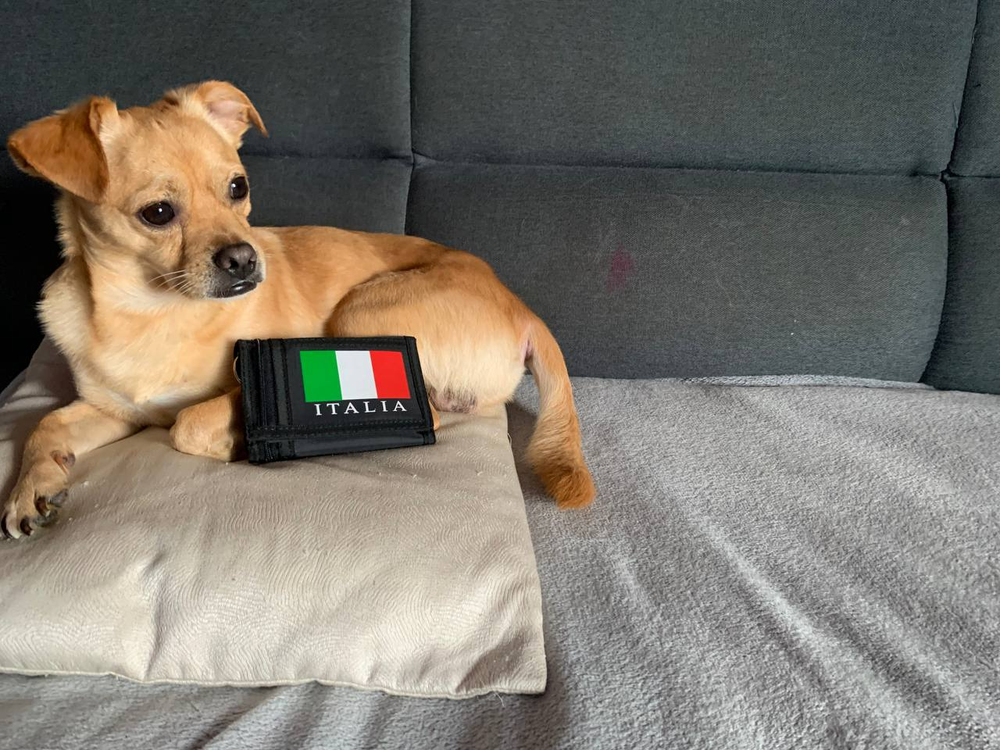
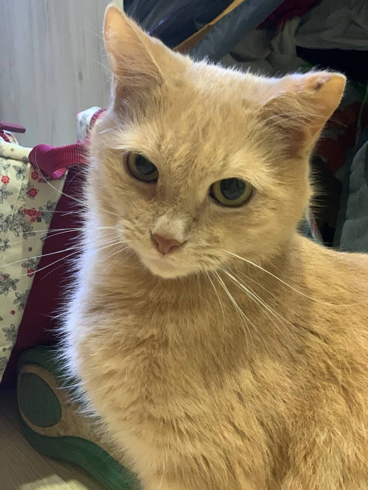
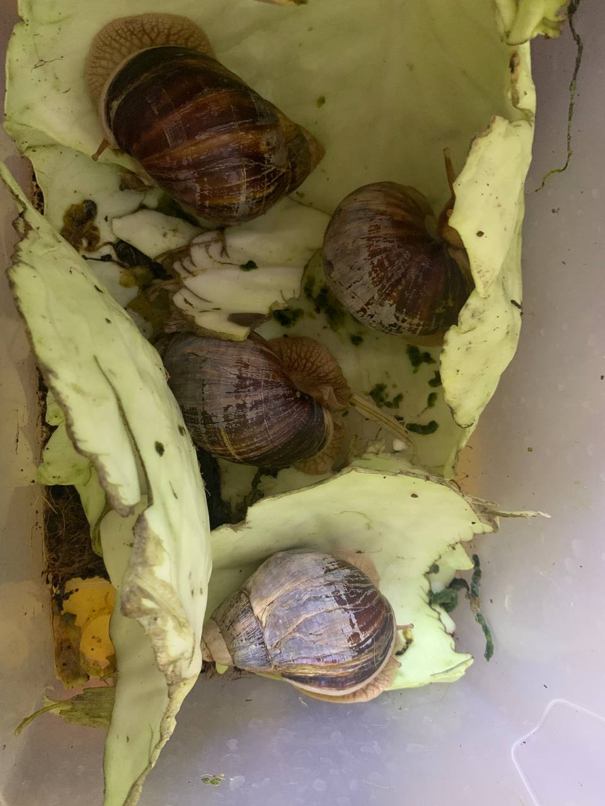

Про мого песика - Тіша Про мого котика - Мірон Про моїх равликів
Про мого песика - Тіша
Про Тішу
В мене є пес. Його звуть Тіхон, але я його зову Тіша. День народження в нього 15 грудня, тому вже скоро йому буде 6 років
Зовнішній вигляд Тіши
В нього є історія. Спочатку коли ми ще його тільки купили він був білий схожий на Чіху-хуа міні, як нам і сказали, але потім коли він підріс він став дуже великим, та зараз важить вже 8 кілограмів! Зараз він "Чіху-хуа біґі" (я пожартував). Та в нього зараз руда шерсть та карі очі.
Фото Тіши:
Інтереси Тіши
Улюблена справа Тіши це їсти. Він дуже любить сир. Коли ми їсимо, він просто сидить і своїм поглядом гіпнотезує!Я ледве витримиваю його миленькі очі коли ми їсимо. Ще він любить гуляти. Та коли ми говоримо Тіхону гуляти, він різко наводе на нас свій погляд так вилуплує очі.
Відео про Чіху-хуа:
Про мого котика - Мірон
Про Мірона
Я люблю свого котика Мірона. Він старичок та народився даже раніше ніж я! Йому вже 12 років, він народився в марті 2011 року. Мої батьки знайшли Мірона на вулиці та забрали додому. Мірон безпородний кіт.
Зовнішній вигляд Мірона
У Мірона руда шерсть. Також в нього золоті очі.
Фото Мірона :
Інтереси Мірона
Мірон дуже любе спати! Спить він 12-16 годин на день. Також любить їсти, їсить він завжди один і той же корм, тому що від іншого йому нудить. Також в нього є історія. Це сталося десь місяців 6 тому. Ще раніше він любив сидіти на балконі, і стався випадок, коли він мало не вмер. Він сидів на краю балкона. І слава богу я встиг його дістати.
Відео про безпорідних котів:
Про моїх равликів
Про равликів
В мене є равлики. Їх звуть Максі, Патрік, Лео та Уля. Вид уліток Ахатіни.
Зовнішній вигляд равликів
В них сіра пластична шкіра та твердий коричневий панцир.
Фото равликів:
Інтереси моїх равликів
Вони дуже люблять огірки. Це їх улюблена їжа. Якщо в них брудно то вони багато сплять. Ще вони люблять плавати. Для них можна набрати цілий контейнер і починаєтся веселуха!
Відео про Ахатінів: